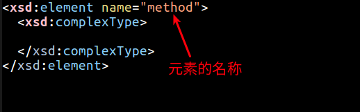
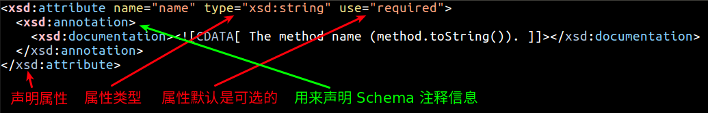
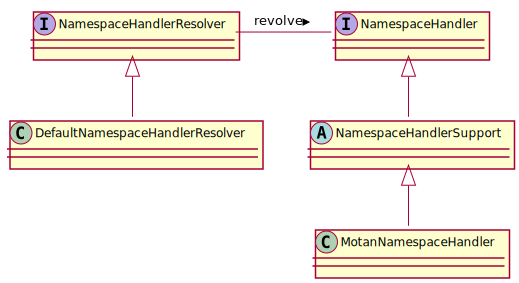

Spring (三) - 自定义标签的解析
在 Spring (一) - XML 文件解析与 Bean 的注册 中，我们在最后讲到 Spring 中存在默认标签和自定义标签两种标签，在 上一节 Spring (一) - XML 文件解析与 Bean 的注册 中，我们分析了 Spring 对默认标签是如何解析的进行了分析，那么在这一节中我们将会着重讲述如何对自定义标签进行解析。
1. 自定义标签使用
这里以 Motan 为例来讲解。
1.1 定义 XSD 文件
定义一个 XSD 文件描述组件内容:
1 2 3 4 5 6 7 8 9 10 11 12 13 14 15 16 17 18 19 20 21 22 23 24
| <?xml version="1.0" encoding="UTF-8"?> <xsd:schema xmlns="http://api.weibo.com/schema/motan" xmlns:xsd="http://www.w3.org/2001/XMLSchema" targetNamespace="http://api.weibo.com/schema/motan"> <xsd:element name="method"> <xsd:complexType> <xsd:attribute name="name" type="xsd:string" use="required"> <xsd:annotation> <xsd:documentation><![CDATA[ The method name (method.toString()). ]]></xsd:documentation> </xsd:annotation> </xsd:attribute> <xsd:attribute name="requestTimeout" type="xsd:string" use="optional"> <xsd:annotation> <xsd:documentation><![CDATA[ The method invoke timeout. ]]></xsd:documentation> </xsd:annotation> </xsd:attribute> </xsd:complexType> </xsd:element> </xsd:schema>
|
声明命名空间:

定义复合元素:

定义元素属性:

CDATA:
A CDATA section is a section of element content that is marked for the parser to interpret as only character data, not markup.
1 2 3 4 5 6 7 8 9 10 11 12 13
| <item> <title>Title of Feed Item</title> <link>/mylink/article1</link> <description> <![CDATA[ <p> <a href="/mylink/article1"><img style="float: left; margin-right: 5px;" height="80" src="/mylink/image" alt=""/></a> Author Names <br/><em>Date</em> <br/>Paragraph of text describing the article to be displayed</p> ]]> </description> </item>
|
1.2 创建一个类实现 BeanDefinitionParser 接口:
类 MotanBeanDefinitionParser 用来解析 XSD 文件中的定义和组件定义:
1 2 3 4 5 6
| public class MotanBeanDefinitionParser implements BeanDefinitionParser { @Override public BeanDefinition parse(Element element, ParserContext parserContext) { } }
|
1.3 创建一个类实现 NamespaceHandlerSupport 接口:
MotanNamespaceHandler 负责将组件注册到 Spring 容器:
1 2 3 4 5 6 7 8
| public class MotanNamespaceHandler extends NamespaceHandlerSupport { @Override public void init() { registerBeanDefinitionParser("service", new MotanBeanDefinitionParser(ServiceConfigBean.class, true)); Initializable initialization = InitializationFactory.getInitialization(); initialization.init(); } }
|
1.4 编写 spring.handlers 和 spring.schemas 文件:
文件 resources/META-INF/spring.handlers:
1
| http\://api.weibo.com/schema/motan=com.weibo.api.motan.config.springsupport.MotanNamespaceHandler
|
文件 resources/META-INF/spring.schemas:
1
| http\://api.weibo.com/schema/motan.xsd=META-INF/motan.xsd
|
1.5 使用自定义标签
1 2 3 4 5 6 7 8 9 10 11 12 13 14 15 16 17 18 19 20 21 22
| <?xml version="1.0" encoding="UTF-8"?> <beans xmlns="http://www.springframework.org/schema/beans" xmlns:xsi="http://www.w3.org/2001/XMLSchema-instance" xmlns:aop="http://www.springframework.org/schema/aop" xmlns:context="http://www.springframework.org/schema/context" xmlns:lang="http://www.springframework.org/schema/lang" xmlns:tx="http://www.springframework.org/schema/tx" xmlns:motan="http://api.weibo.com/schema/motan" xmlns:weibo="http://api.weibo.com/schema/weibo" xmlns:util="http://www.springframework.org/schema/util" xsi:schemaLocation=" http://www.springframework.org/schema/beans http://www.springframework.org/schema/beans/spring-beans-2.5.xsd http://www.springframework.org/schema/aop http://www.springframework.org/schema/aop/spring-aop-2.5.xsd http://www.springframework.org/schema/context http://www.springframework.org/schema/context/spring-context-2.5.xsd http://www.springframework.org/schema/lang http://www.springframework.org/schema/lang/spring-lang-2.5.xsd http://www.springframework.org/schema/tx http://www.springframework.org/schema/tx/spring-tx-2.5.xsd http://www.springframework.org/schema/util http://www.springframework.org/schema/util/spring-util-2.5.xsd http://api.weibo.com/schema/weibo http://api.weibo.com/schema/weibo.xsd http://api.weibo.com/schema/motan http://api.weibo.com/schema/motan.xsd "> <motan:referer id="clientDirectTest" registry="mockRegistry" directUrl="127.0.0.1:7888" interface="com.weibo.api.motan.config.springsupport.ITest" protocol="motan" application="test1" module="test1" /> </beans>
|
2 自定义标签解析
1 2 3 4 5 6
| public BeanDefinition parseCustomElement(Element ele, BeanDefinition containingBd) { String namespaceUri = getNamespaceURI(ele); NamespaceHandler handler = this.readerContext.getNamespaceHandlerResolver().resolve(namespaceUri); return handler.parse(ele, new ParserContext(this.readerContext, this, containingBd)); }
|
2.1 获取标签的命名空间
org.w3c.dom.Node 提供了方法可以直接获取元素的命名空间:
1 2 3 4
| public String getNamespaceURI(Node node) { return node.getNamespaceURI(); }
|
2.2 提取自定义标签处理器
默认的 NamespaceHandlerResolver 是在类 XmlBeanDefinitionReader 创建 XmlReaderContext 中初始化的:
1 2 3 4
| protected NamespaceHandlerResolver createDefaultNamespaceHandlerResolver() { return new DefaultNamespaceHandlerResolver(getResourceLoader().getClassLoader()); }
|
所以 resolve 方法应该是在 DefaultNamespaceHandlerResolver 中实现的:
1 2 3 4 5 6 7 8 9 10 11 12 13 14 15 16 17 18 19
| @Override public NamespaceHandler resolve(String namespaceUri) { Map<String, Object> handlerMappings = getHandlerMappings(); Object handlerOrClassName = handlerMappings.get(namespaceUri); if (handlerOrClassName == null) { return null; } else if (handlerOrClassName instanceof NamespaceHandler) { return (NamespaceHandler) handlerOrClassName; } else { String className = (String) handlerOrClassName; Class<?> handlerClass = ClassUtils.forName(className, this.classLoader); NamespaceHandler namespaceHandler = (NamespaceHandler) BeanUtils.instantiateClass(handlerClass); namespaceHandler.init(); handlerMappings.put(namespaceUri, namespaceHandler); return namespaceHandler; } }
|
2.2.1 getHandlerMappings 读取 Spring.handlers 配置文件并将配置文件缓存在 Map 中:
1 2 3 4 5 6 7 8 9 10 11 12 13 14 15 16
| public static final String DEFAULT_HANDLER_MAPPINGS_LOCATION = "META-INF/spring.handlers"; private Map<String, Object> getHandlerMappings() { if (this.handlerMappings == null) { synchronized (this) { Properties mappings = PropertiesLoaderUtils.loadAllProperties(this.handlerMappingsLocation, this.classLoader); Map<String, Object> handlerMappings = new ConcurrentHashMap<>(mappings.size()); CollectionUtils.mergePropertiesIntoMap(mappings, handlerMappings); this.handlerMappings = handlerMappings; } } return this.handlerMappings; }
|
2.2.2 根据命名空间寻找对应的信息:
1 2 3 4 5 6 7 8 9 10
| Object handlerOrClassName = handlerMappings.get(namespaceUri); if (handlerOrClassName == null) { NamespaceHandler namespaceHandler = (NamespaceHandler) BeanUtils.instantiateClass(handlerClass); namespaceHandler.init(); handlerMappings.put(namespaceUri, namespaceHandler); } return handlerOrClassName;
|
2.3 标签解析
找到 NamespaceHandler 之后，我们这里实际上已经被初始化为 MotanNamespaceHandler 了，而 MotanNamespaceHandler 也已经被调用了 init() 方法完成了初始化的工作。因此就接着执行这句代码:
1 2
| handler.parse(ele, new ParserContext(this.readerContext, this, containingBd))
|
我们自己本身并没有定义 parse() 方法，因此应该在父类中定义了:

1 2 3 4 5 6 7 8 9 10 11 12 13 14
| private final Map<String, BeanDefinitionParser> parsers = new HashMap<>(); @Override public BeanDefinition parse(Element element, ParserContext parserContext) { return findParserForElement(element, parserContext).parse(element, parserContext); } private BeanDefinitionParser findParserForElement(Element element, ParserContext parserContext) { String localName = parserContext.getDelegate().getLocalName(element); BeanDefinitionParser parser = this.parsers.get(localName); return parser; }
|
简而言之，就是从 parsers 中寻找到 MotanBeanDefinitionParser 实例，并调用其自身的 parse 方法进行进一步解析。
参考